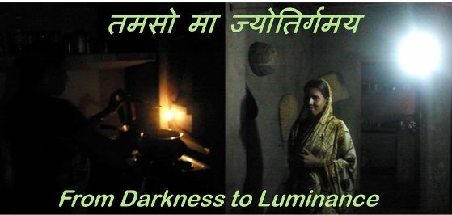
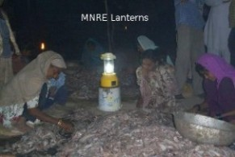

Tamaso Maa Jyotirgamaya – “Energy-zing” Rural India
Dr. Ashok K. Das, CEO SunMoksha
Chair,
TiE Bangalore CleanTech SIG

Current Scenario of Rural Electricity
“Tamaso Maa Jyotirgamaya,” (Dear God, please take me from darkness to luminance),
is a saying that has been used for centuries in various contexts. But, for me, the phrase is the
embodiment of what rural India craves for today. I have been working on village electrification
for the past few years, and have travelled through villages across our country, lived with
the villagers, and tried to understand the dynamics of rural electrification at close proximity.
Village electrification is as much an art as it is science!
There are several models already in practice in various parts of India,
especially the north and the east, where energy shortage is acute.
Here is a recount of the learning from these village projects and an attempt to identify potential opportunities
in this sector.
The United Nations set eight
Millennium Developmental Goals (MDG) that calls out for
eradication of poverty & hunger, universal primary education, gender equality,
infant mortality, maternal health, and environmental sustainability.
What is interesting to note is that energy does not figure in these goals!
IEA appropriately called it
“Energy poverty: The missing Millennium Development Goal?”
A 2010 study by World Energy Council, “Energy Access through Rural Electrification and Renewable Energy”,
confirms that “energy poverty is the main reason for rural poverty which in turn gives rise to health issues”
and “restricts the income level and industrial/commercial activity leading to economic stagnation or slow growth.”
The fact has been realized by the UN, and 2012 has been declared as
“
International Year of Sustainable Energy for All.”.In my view, the MDG revolves around the nexus of Education,
Employment and Energy. If these three can be achieved, all of the goals of MDG are
achievable and only then will lead to the empowerment of the poor of the world.
Access to energy plays the key role in this – it enables both employment and education.
According to the IEA’s report on
World Energy Outlook 2011, 1.4 billion people, that
is a fifth of the world’s population, do not have access to electricity, and of this,
80% are in the rural areas. While 585 million reside in Sub-Saharan Africa,
the majority, 815 million live in Asia, with India accounting for 400 million.
At the current rate of interventions, 1.1 billion people will still lack access to electricity in 2030 –
with 87% in rural areas. So, the interventions have to accelerate globally!
For India, the
Latest Census Data show that only 53% of the rural population has access to grid electricity;
and 43% still use kerosene for lighting. According to Chandrabhan Sharma,
the Pradhan of Vidhuni village in Shrawasti District, UP, people pay anywhere between
Rs. 100 to 150 per month on kerosene. However, this does not address other needs they have –
power for mobile charging, fans, TV/Satellite, irrigation pumps, agriculture machinery, computers in schools,
and so on. Local entrepreneurs have, for a long time, exploited this situation, particularly in abundance
in Bihar and UP by providing diesel generator based power just enough to light one CFL bulb for Rs. 100 per month.
A shopkeeper in Mansahi village of Katihar District in Bihar, said he pays Rs. 60 per month for one CFL bulb for
3 just hours every night! Like the rest of us, rural India is aspiring and hungry for power!
The question is, how do we address this huge latent demand?
The obvious option is to expand the grid-electrification to the villages.
The pace of grid-electrification in India has increased multi-fold since the launch of
the
Rajeev Gandhi Grameen Vidyutikaran Yojana (RGGVY) scheme in 2005 by the Ministry of Power.
As of April 2012, about 93.8% villages are electrified leaving some 36,700 villages un-electrified out of a total of 593,700 villages.
A trip to these “electrified” villages, on the other hand, show us the reality!
These electrified villages receive power for as low as 2 hours a day, to maximum of 8-10 hours a day.
The timing of the power supply is also unscheduled, and hence villagers are never able to plan their activities.
In Alingo village near Bhuvaneshwar, Odisha, the grid electricity is supplied for just a few hours, but at a voltage as low as 60V!
At this low voltage, not only are the lights are dim, neither can any other equipment be operated!
In short, pace of electricity generation has not kept up
with the pace of increased grid-access under RGGVY, whereas, demand has been increasing at a rapid pace.
The
Load Generation Balance Reports by Central Electricity Authority (CEA) of India,
shows that the gap in average supply and demand varied from 8 to 11% between 2007 and 2012,
while the peak varied from 9 to 18%.
There has been a general decrease in the deficit, but there is still a long way to go.
According to a
2009 McKinsey Report, both the peak and base deficits will, in fact, increase to 14% and 20% respectively by 2017 at the current rate of growth in India.
It’s clear that there is a huge latent demand for regular power supply in our rural areas.
what can we, as entrepreneurs, do to address this opportunity?
What entrepreneurs are doing to address this problem?
Over the past decade, several attempts have been made to address the energy deficit
and access to it by the poor and rural populace.
While grid-electrification has been the primary effort of the government,
decentralized renewable energy technologies have played a significant role in this effort.
It all began with
MNRE (Ministry of New and Renewable Energy) distributing solar lanterns to the villages,
later resulting in a massive campaign by
TERI (The Energy Research Institute),
under its
“Lighting a Billion Lives Program” (LaBL).
The first phase of LaBL, from January 2010 to July 2010,
provided lighting to around 50,000 rural households spread across 300 villages in 9 states of India.
The second phase of the project extended the program from July 2011 to June 2012 covering 700 more villages
spread across 16 states. The final goal of this program is to cover 1000 villages spread across 17 states in India.
The real breakthrough however, came from an entrepreneur, Harish Hande, who founded
Selco to address rural home lighting in Karnataka. Started in 1995, Selco has provided over
135,000 solar home lighting systems (SHLS) in the past 17 years
[Ref].
With their on-the-ground experience,
Selco discovered that the solution is actually in financial engineering and not in lighting or energy engineering!
They worked on providing access to bank loans for the consumers to purchase a SHLS.
Selco partnered with local Grameen Banks to arrange mini loans for its customers, and helped scale the
model across Karnataka. However, it has not been able to scale the model to other regions of the country due to
limitations of the financial model and service levels requirements. From these limitations and constraints,
Selco has now moved to working on a model to develop local entrepreneurs to replicate its
model across the country.
In parallel, another pioneering company,
DESI Power,
developed a micro-grid pay-as-you-go model for renewable electricity produced from biomass and
distributed through privately developed micro-grids, serving the villagers in Araria, Bihar.
Their goal is not to just provide lighting, but to provide electricity through biomass gasification system.

DESI Power now powers rice mills, irrigation pumps and other such microenterprises.
In contrast to many Government schemes, DESI Power’s customers paid for the electricity they used.
They have a target of 100 villages in that district, and according to latest status report of the program,
four village grids have been developed. DESI Power inspired several other micro-grid players and models
that have emerged over the decade.
One of these is
Husk Power Systems (HPS), which adapted the DESI Power
program into their own model. They focused only on providing evening lighting to the villagers in Western
districts of Bihar such as Champaran and Muzaffarpur.
They are replacing the local DG based electricity supply with electricity generated from a renewable source.
Since 2008, HPS has successfully installed more than 80 plants in Bihar,
providing electricity to over 200,000 people across 300 villages and hamlets [Ref]. Husk developed the first
‘commercial’ social enterprise for rural electrification with micro-grid, balancing between social impact and
profitability.
Mera Gao Power, entered this market a in 2010, and chose solar as the power source.
They innovated low-cost solutions and packages to serve the remote and extremely poor population of the villages
in Uttar Pradesh. They have, so far, set-up micro-grid power plants in 48 villages of Reosa Block of Sitapur District,
Uttar Pradesh serving 1,200 households and approximately 6,000 people.
Their goal is to touch one million people by 2017 [Ref].
Minda NextGenTech is the first entrant in the micro-grid based power supply in villages with the backing
of a large corporation, and is experimenting with novel business models.
Similarly companies such as
Gram Power in Rajasthan and Nature Infratech in Bihar are
emerging to provide power to the villagers.
Challenges and Opportunities
The models above have seen their own share of successes and failures.
Individual home lighting solutions demand a large up-front cash outlay from the poor consumers whose day-to-day
living depends on a meagre income.
MNRE subsidies have come in handy for solar lantern solutions, so has TERI’s LaBL program.
However, these programs have not been sustainable.
Selco’s solution of consumer finance to its customers through local banks
have worked and been very successful in Karnataka. However, they have not been able to replicate this in other
parts of the country. The banks are generally not interested in lending small amounts of money for personal consumption.
The Micro-grid approach has solved both of these issues. Consumers don’t have a large upfront large cash outflow.
Instead, they benefit from the pay-as-you-go model, which is easily affordable on a daily, weekly, or monthly
outflow of small amounts, which in any case is spent for lighting (kerosene/DG) and, more importantly, for mobile phone charging.
The pay-as-you-go model has been in existence for a while with local entrepreneurs providing one, two,
or three lights, fans, etc. to consumers through DG sets. Husk Power adapted this model with bio-mass-based
electricity generation. Both of these models have worked both in non-electrified as well as electrified areas
where power is intermittent, unpredictable and limited to just a few hours. The micro-grid solutions, from the
early days of DESI Power to the latest addition of Gram Power, all face common issues of distribution,
collection and control. Most operators use a large micro-grid for distribution, and manual process for
collection which adds cost.
Controlling defaulters is also a manual process, requiring human intervention.
Technical interventions are needed to resolve these process issues and improve the affordability of such solutions.
Simpa Networks has introduced technologies to address collection and control at the individual home lighting level.
Gram Power also claims to have addressed this issue for micro-grids.
A survey of CEOs in this sector revealed a few
key pain points.
One of the major issues that all of them pointed out was the lack of skilled people.
As Gyanesh Pandey of Husk Power put it, “Availability of talent is a major problem in this sector”.
Praveen Bhasin of Minda NextGenTech echoed similar concerns. This lack of talent is across levels
– from executives to engineers to technicians. “The issue is not that we don’t have talented people,
the bigger issue is finding the right talent willing to work in the villages and at compensation levels
commensurate with the business model!” This is an area that has primarily gone unaddressed in this sector.
Another major challenge for all these models has been the unavailability of financing mechanisms.
While for SHS, individual small financing has been an issue prohibiting scale-up of Selco’s Karnataka model,
the micro-grid world has faced the same issue at enterprise level.
Micro-grids need an equivalent of micro-project financing that is not available in the market.
Plus, the business model for rural micro-grids demand a patient capital, as the return on capital is usually delayed.
According to Nikhil Jaisinghani of Mera Gao Power, financiers looking at this sector are also worried about uncertainties
from changes in demand as more and more villages get electrified, and changes in policies to make these models viable
in the long-run, that is required to recover profits from such ventures.
This leads to the challenges of policy reforms that are lacking in this sector.
Most government policies are for large scale MW level power generation and feed to the grid,
or for completely off-grid solar systems. Policy intervention is needed for the micro-grid sector,
extending benefits like that of National Solar Mission to the small micro-grid players.
In summary, there are still numerous challenges to address in rural electrification.
However, these challenges create opportunities and it is for the enterprising, innovative entrepreneurs to
exploit these opportunities and create solutions to address this market.
--
--End of Article: "Tamaso Maa Jyotirgamaya – “Energy-zing” Rural India" --
Acknowledgements:
I would like to acknowledge my colleagues Richa, Anand and Kuruvilla for their inputs, feedback and support.
Building Energy Efficiency – Today & Tomorrow
Report from TiE Bangalore Clean Tech SIG Event
November 2010
The market for energy efficiency innovations is all set to be tapped as governments and various other stakeholders have turned their focus
towards energy performance and conservative measures. Energy Efficiency in commercial buildings will be a major focus area considering the
real-estate growth and the fact that buildings account for an estimated 30 percent of the total energy consumption in India.
TiE Cleantech SIG hosted an event on opportunities in Energy Efficiency in Commercial Buildings on November 18, 2010 at Electronic City campus of Infosys,
the host and sponsor for this event.
This event focused on the current state of Energy Efficiency in Commercial Buildings and discussed the
innovations and future opportunities in this sector. Speaker included Dr.Vihsla Garg, Head, Centre for IT in Building Science at IIIT Hyderabad,
Manish Pant, Director of Strategy & Alliances at Schneider Electric India , A. Vaidyanathan, Founder & MD of HMX Systems, and Rohan Parikh,
Head of Green Initiatives at Infosys. The event was attended by 40+ enthusiastic entrepreneurs and professionals interested in or working in
this energy efficiency sector, and provided a very stimulating Q/A session with the speakers.
Several business ideas were highlighted during the discussions and the audience went away with a good sense about the opportunities and future
of energy efficiency in commercial buildings. Here are some of the highlights and summary of the discussion.
Some facts:
- Excellent growth in green building sector – number of certified building increased from 1 in 2003 to 120 in 2010, while the number of registered building grew from 1 in 2003 to 727 in 2010. More CXOs and senior management now involved, and thousand-fold growth in number of certified LEED consultants over the same period of time.
- 70% of buildings of 2030 haven't yet been built, the top 20 software companies will build out/occupy 200 million sqft of office space in the next 3 years – where's the power going to come for this expansion?
- Energy demand will grow 4-fold by 2050, whereas CO2 emissions must be reduced by half to avoid dramatic climate change.
- BEE star-rating in place. ECBC to soon become mandatory – how soon is being debated.
- Expanding EE domains – EE services, Smart grids, Demand response, Performance contracting, and carbon services.
- Carbon foot print of IT companies: (1) Electricity (75%) with HVAC (45%), Lighting (10%), Computers
and Data centers (40%), Misc equipment (5%) and (2) Mobility (25%) with Business travel (68%), Employee commute (32%).
- The catalysts for energy efficiency are many-fold – National Mission for Enhanced Energy Efficiency
(NMEEE to unlock INR73000 Cr market by 2015), CO2 Emission reduction targets (98.55 million tons annually),
promotion of Green Building construction, increasing energy price, increased use of electric cars,
1 billion participants in Earth Hour, shorter payback on investments, tax incentives, and increased awareness.
- Infosys goals: 10X Improvement target in EE over 2007 levels, Sourcing energy from Green Utilities to
become Carbon Neutral, Be water and waste neutral (RWH, Recycling, Onsite organic waste processing),
plant one native tree for every new employee to increase bio-diversity.
- Infosys is well on its way to achieving its goal of reducing power consumption by 90%.
Extensive data collection with meters at various system and sub-system levels.
ROI for such expenditures is only a few days, not months or years! Data is also used to drive AMCs and achieved
savings much higher compared to metering cost.
- Infosys has used several ‘out of the box’ concepts and basic 6th grader physics to achieve some the feats
– such as smart power-strip design embedded with sensors, wi-fi, etc. to monitor and control power consumptions,
s passive designs, daylighting, and use of simulation for lighting and cooling designs.
- HMX Systems has developed an ambiator – an energy efficient alternative to air conditioning, achieving
about 90% of air conditioning effectiveness at 1/3 rd energy cost! HMX essentially found a way to ‘connect-the-dots’
– the relationship between Thermal comfort, Energy, and Environment and converting it to the other three dots –
Product, Market and Solution.
Some of the Challenges, Potential and Opportunities:
- A conservative market opportunity worth INR 10,000 Cr per year.
- There is a lack of rating institutions – we need to build more such institutes –
start-ups face this challenge even more as they don’t have resources to build these on their own.
- There is lack of financing. But there are several attempts in process to address this.
Also, Schneider has created ‘SE venture fund’ and ‘Access to Energy’ fund for EE start-ups and end consumers.
- Measurement and verification services – the country is severely short on these facilities and services.
There is a barrage of consultants for energy audits and service providers, but scarcity of service provider to measure and verify post installation.
- Certification services –
support customers to receive official certification on energy and emission performance.
- Products & Weather data –
material testing labs, weather data.
- Performance contracting –
provide approach and financing for energy efficiency improvement on customers’ behalf with guaranteed/non-guaranteed saving commitment
- Demand response –
consulting, measurement and verification analytics, energy aggregation, NOC management
- Product energy optimization –
deliver production data used in energy forecast modeling, generate energy forecasts and track against production execution.
- Technological opportunities –
simulation software development, interface development for energy simulation software, software for integration of workflow
- Integrated solutions – interoperability and openness to third party systems – building management, HVAC & lighting control, energy monitoring, motor c ontrol, electrical distribution, critical power and renewable energy.
- Training services – provide trainings on energy and emission management to support sustainable implementation of energy efficiency. This also addresses the start-up challenge of unavailability and inability to attract quality manpower.
- And the major challenge as summarized by Vaidy through a Haitian proverb – ‘Beyond the mountains, there are mountains again…’!
- Behavior change is a must in order to achieve EE. EE and RE are not mutually exclusive – you must use EE whether or not you opt for RE. EE is savings, and we are today spending more than what we have – therefore, EE, RE, and all green initiatives are key to our future.
Best wishes for a great opportunity in energy efficiency!!
--
--End of Article: "Building Energy Efficiency" --
Creating Entrepreneurship Ecosystem for Climate Technologies
A Work Undertaken for World Bank infoDev
November 2010
A key contributor to the growth of an economy and development of a nation are the innovators,
entrepreneurs, and SMEs. Clean technologies – clean energy, water, waste management, energy efficiency,
clean transportation, etc. – are no exceptions. While large corporations take products to the mainstream and
generate large impacts, Entrepreneurs and SMEs are the ones that feed in with innovative solutions and products.
Hence, for the clean technology sectors to flourish, we must encourage and promote the innovative SMEs and create
conducive environment for them.
The clean tech innovation and entrepreneurial ecosystem, essentially require six key elements:
- Technology – whether indigenous or transferred,
- Market – local and global,
- Policy – especially important in clean tech as policies create market,
- Capacity – of entrepreneurs, mentors and workforce,
- Finance – throughout the product life cycle – from technology development to commercialization to large scale deployment,
- International ecosystem – for both technology sourcing and marketing of products and solutions.
Let’s understand the gaps in these elements one by one, in the Indian context.
Technology:
Most of the R&D in the labs and institutes are esoteric and far from market realities.
These innovations mostly stay stuck within the labs. We must drive R&D based on market needs and commercialization potential.
NRDC has finally taken some steps to see that the innovations from these labs hit the market and make some large impacts.
On the other hand, i2india have searched for such technologies in Indian labs and research/academic institutes,
but have not been successful in getting any of these technologies out to market.
Technology transfer from developed nations is also not simple.
The technologies must be adapted to the local needs and market conditions.
i2India has been trying to do some of these, and the technologies must be handed over to entrepreneurs
for localization and adaptations to the local conditions.
There is barely any collaboration and information sharing between the R&D houses and amongst the researchers.
Most R&D takes place in silos, and many times are duplicated. Many times, R&Ds taking place in silos end up nowhere,
whereas if these could be brought together, some of them could become a formidable market solution.
There is not enough prototyping testing and demonstration facilities that entrepreneurs could use as shared resources. , as these resources are
quite expensive.
Materials testing, measurement, verification, etc. are activities that could be used as shared resources, but are not readily available.
Market:
Entrepreneurs often lack market information to create viable business. They are usually too tech focused, and away from the market realities. There is hardly any attempt to track the market needs, as it requires people on the ground, at the field, gathering market data.
Consumers don’t understand the value of these new technologies and are usually quite price-sensitive. Awareness must be created amongst the consumers for the benefits, and perhaps policy is the best policy to get this implemented. JNNSM and NMEE are such efforts that have now been initiated, and are welcome moves.
Policy:
Policies are key, as I just mentioned, because it creates market for new technologies with still nascent market penetration. In India, policy is mostly driven by inputs from government bodies and, at most, large corporations and large industry lobbies. These policies generally overlook the needs of the SMEs and generally are not SME friendly. Take for example, JNNSM. Very few SMEs are going to be benefited by these large power plants, which are usually large money game. There is some scope for SME suppliers, but most of them will not qualify as they won’t me able to meet the large financial terms and conditions. Therefore, there is a serious need for a platform for SMEs to voice their concerns and influence the policies to impact their business.
Capacity:
This is my second most favorite and would like to dwell on it a bit longer. Even though we think that there are entrepreneurs all around, frankly speaking, we have more ‘life-style’ entrepreneurs than entrepreneurs in the true sense who help create jobs and make impact on the society. There is severe lack of seasoned entrepreneurs in India – even more so in clean technologies. At least IT sector hasnow become a bit more mature, not so with clean tech. At the same time, there is also a severe lack of trained workforce. New graduates and young workforce is more attracted to the glamour of IT world rather than the reality and less-glamorous world of clean technologies. Lack of heroes in the clean tech sector could be one of the reasons for this apathy towards a career in clean tech. The IT professionals are influenced and charmed by icons such as Nilekani and NRN, but where is such an icon in clean technologies? Now this apathy could also be because of the relatively lean and mean salary structure and financial rewards in the clean tech sector.
Entrepreneurs also lack end-to-end support for their business. They have different needs at the different phases of the business, and it is very hard to find someone that could hand-hold them throughout their journey.
And last, but not the least, there are really very few seasoned mentors to guide and handhold clean tech start-ups, and take them through their difficult journey.
Finance:
This is my most favorite subject and I will dwell on it a little deeper. Development and commercialization of innovation in
clean technologies often require large investments and are risky, both for the innovator and for financiers.
The need for investments and the appropriate funding resource depends upon the stage of innovation.
While most innovation research and concept get some funding from government agencies such as TDDP, TePP, etc.,
the innovations are picked up and funded by venture capital world once the concept has matured and product has been
at least prototyped and demonstrated. After that even conventional bank loans and PE funds kick-in for scale-up.
However, the most difficult period for the entrepreneur is the phase where public funds run out and private
funds still don’t kick-in when the prototype development and demonstration must be done. This is the valley of death.
The financial world severely lacks valley-of-death funds. This fund is needed for prototyping, demonstration and business model validation, etc.
Another option for some of these funding could be debt through bank loans.
However, conventional bank loans are neither available nor ideal for such financing since they are not adjusted to
cash flows out of investments into innovations. Banks really don’t have the bandwidth or the depth to understand clean technology sector.
SMEs and entrepreneurs at this stage do not have any collateral to offer and hence are denied of such loans.
Bankers are usually risk averse and choose to play in traditional “safe” sectors.
They don’t have an apatite for risk – even if the top management is ok, the at the branch level, the managers prefer to play is safe.
This applies despite the credit guarantee schemes in place to cover such risky debts.
The last but equally important leg of financing is the demand financing. In case of clean technologies,
the cost is a major factor and most clean tech applications require upfront investment.
There is a lack of funds to finance the consumers to adopt these new clean technology solutions –
especially to promote the technologies from the SMEs and innovative entrepreneurs.
SOLUTIONS?
So, what needs to be done? With extensive stakeholder engagement,
a few solutions and actions were identified to bridge the gaps.
We can categorize these solutions in three primary categories – Finance, Capacity and Ecosystem.
SOLUTIONS?
Access to Finance:
- Establish a flexible high-risk early stage fund to address the valley of death – at various levels including proof of concept, pre-seed and seed. This fund will bridge the gaps when public funding tapers off and private funding kicks in. Make funding simple, transparent and easy to apply for.
- “Crowd-in” multiple private sector investment – facilitate other sources of financing through syndicating investors, cataloguing existing sources of funding and building partnerships with banks to assist in accessing working capital finance.
- Create a debt financing instrument for clean tech SMEs and overcome the barriers of the conventional banking practices.
- Link market opportunities to technologies to attract funding – make entrepreneurs investment ready. Research and track market demands and trends, identify market needs, and match them to available technologies. Promote business model innovation to adapting technologies to local needs in India.
- Work with the government to establish means of consumer financing. BEE is working to create a RTGF for EE projects.
Others should also follow. Income-tax breaks are another option to cover the consumers, along with low-cost financing.
SOLUTIONS?
Capacity Building:
- Build a pool of seasoned and trusted mentors available to entrepreneurs – prepare seasoned entrepreneurs and professionals to provide effective mentoring and enable local proximity to handhold entrepreneurs through company journey. Enable trusted match-making and create a system to recognize and reward the mentors.
- Instill business and finance knowledge to the entrepreneurs who are typically technology experts. Teach soft skills to tech-savvy one-dimensional entrepreneurs. Provide entrepreneurial training and capacity building – in collaboration with incubators, TiE, NEN, etc..
- Establish a platform to connect innovators to entrepreneurs - link technologies and innovations to aspiring entrepreneurs & SMEs. Network and train incubators.
- Provide the entrepreneurs an access to market through appropriate partnership with industries and sales channels to reach the consumers.
- Provide an avenue to recognize and reward ‘heroes’ in the cleantech sector.
SOLUTIONS?
Ecosystem Development:
- Systematic facilitation of collaborative R&D with focus on technologies that create high impact solutions. A knowledge database with assessment of potential for localization of worldwide technologies. A support system for global collaboration on R&D, technology transfer and knowledge sharing through international innovation center network.
- Provide and facilitate access to a range of analytical and market research products including the promotion of regulatory good-practice and innovation policy advocacy.
- Build regional and technology specific clusters of innovation. Provide access to prototyping and testing facilities to innovators and entrepreneurs in their commercialization journey. Facilitate SMEs access to large industries to create technology partnerships, demonstration projects and manufacturing support.
- A platform to connect innovators to entrepreneurs - links technologies and innovations to aspiring entrepreneurs, &SMEs.
- Work with policy makers and government to raise awareness. Provide market and technology inputs from industry and experts in the SME sectors to policy makers. Provide entrepreneurs a platform for unified voice in the policy making.
In summary,
the solutions outlined above are centered around :
- Providing access to flexible financing at a number of strategic levels,
- Building capacity of new and existing enterprises,
- Enabling collaboration and supporting an ecosystem that aggregates existing partners
and facilitates interaction of innovative enterprises with large industry,
- Providing a hub for building international partnerships
that can facilitate technology transfer and collaborative R&D,
- Business to Business linkages.
A report for India’s CIEC can be found at
http://www.infodev.org/articles/india-climate-innovation-center-cic-business-plan-summary
-- End of Article: "Creating Entrepreneurship Ecosystem for Climate Technologies" --
Building a good solar ecosystem in India
--
Pradeep Chakraborty's Blog, September 22, 2008
Solar/PV has been doing the rounds consistently, and has probably
now become one of the most hyped sectors.
In fact, renewable energy has never ever had such a good time! As
mentioned, a tremendous hype has already been built around solar
photovoltaics. Several companies, in India, and elsewhere, have also
jumped into the solar bandwagon.
So what are the reasons behind
this 'sudden' interest in solar?
According
to Dr. Ashok Das, managing director,
Solar Solutions, and a well know expert
in this area, consumers do not yet drive
the solar energy sector. Being energy, it
is mostly driven by the government and
its subsidies.
So, why has there been this 'sudden
interest' in solar? There are two reasons.
First, the climate change issue started getting center stage at world
forums, leading to policies and targets to cut global warming, and
hence boosting renewable energy. Second, the soaring oil prices and
continued dependence on a few countries for oil has led to the
realization of the energy security.
There are several takeaways from the European experience with
solar. Dr. Das says that Europe, particularly, has taken solar very
seriously. They have been a leader in solar. "Germany, for instance,
gave away all of the necessary subsidies to attain energy security.
These subsidies have led to the solar boom. It has also led to an
increased R&D to bring down the cost of solar energy."
Nevertheless, he adds there seems to be a bubble forming in this
sector, like all other booms in the past. The industry will go through
consolidation as the market matures.
And where does India stand in comparison? According to Dr. Das,
steps are being taken to promote solar energy in India. "As of now,
the feed-in tariff is Rs. 15 for photovoltaics and Rs. 12 for thermal
solar. The government also announced a mandatory 5 percent
renewable energy mix in the electricity production.
"The PMO (Prime Minister's Office) has also issued a National Action
Plan that has plans for boosting solar. These subsidies are driving
some of the increased activities in India."
He contends: "We need stronger lobbying so that better subsidies can
come through. Therefore, most of the manufacturing activities in
India are still driven by the export markets."
Surely, given the surge of investments in solar within India, there is
every room for developing a very good ecosystem.
Dr. Das says: "Coming to the solar ecosystem, we already make solar
products, as well as the modules. We also have the capability to make
cells. The only part missing has been wafer, the silicon for solar.
"A few silicon factories should be coming up in India soon. So, India
can easily establish the entire ecosystem for solar photovoltaics."
Postscript: More investments in solar today, in India. According to
Hindu Business Line , there have been three additional investments
worth Rs. 55,000 crores.
Vavasi Telegence to invest Rs 39,000 crore for solar PV and polysilicon
unit; EPV Solar to invest Rs 4,000 crore for solar PV unit; and Lanco
Solar to invest Rs 12,938-crore for solar PV and polysilicon unit.
A word of caution: It's advisable not to get carried away by all the
success in solar. Solar is/was only part of the ecosystem units in the
Indian semicon policy.
Don't forget semiconductors!
While this success in solar does augur well for the solar industry in
India, don't think this is even close to what the Indian semicon policy,
launched with fanfare last September, originally set out to achieve!
--
End of Article: "Building a good solar ecosystem in India" --
Copyright © 2013 SunMoksha. All rights reserved.
Please email your thoughts and queries to info@sunmoksha.com